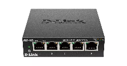

Switch
Un switch de red, también conocido como conmutador de red, es un dispositivo electrónico que conecta dispositivos dentro de una red local (LAN). A diferencia de un router, que dirige el tráfico de datos entre diferentes redes, un switch se encarga de gestionar el tráfico de datos dentro de una misma red.
